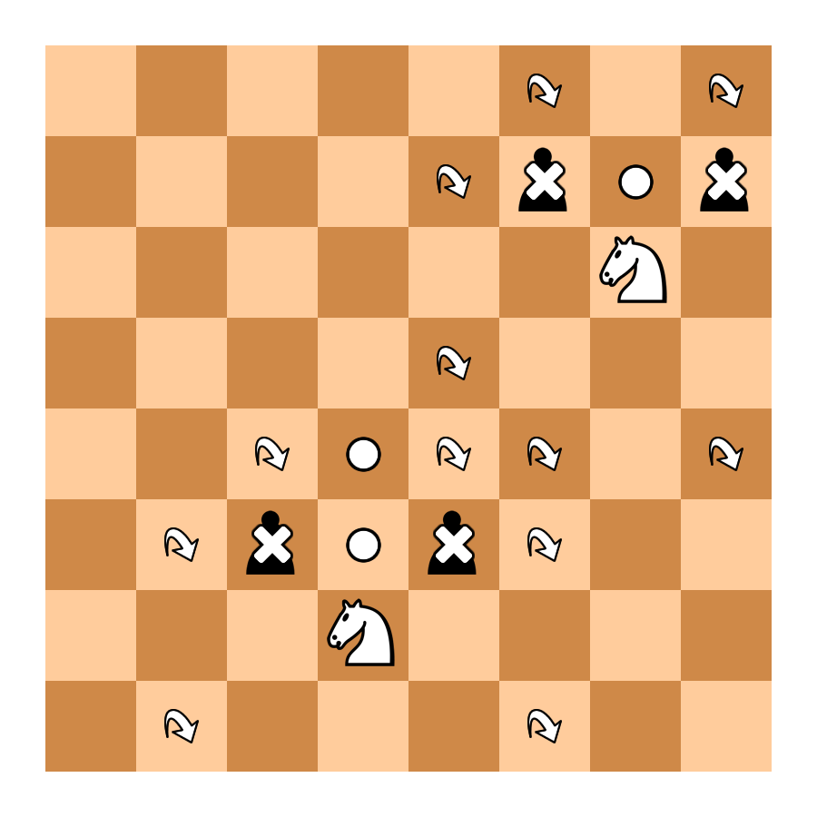

Commander
Classic Queen + Classic Knight.
Commander
Classic Queen + Classic Knight.
 Pawnight
Classic Pawn + Classic Knight.
Pawnight
Classic Pawn + Classic Knight.
 Cardinal
Classic Bishop + Classic Knight
Cardinal
Classic Bishop + Classic Knight
 Knightrider
Knightrider

King Like in Classic Chess.

 Chancellor Classic Rook + Classic Knight.